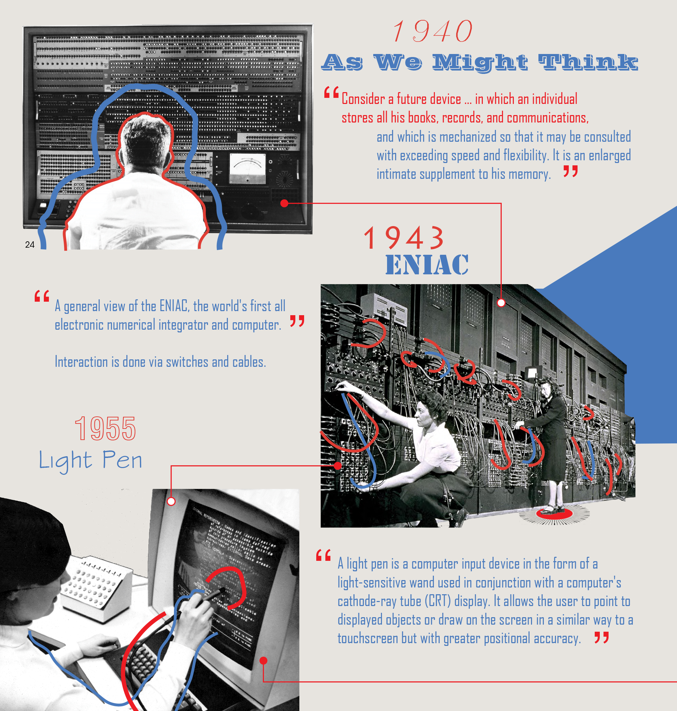
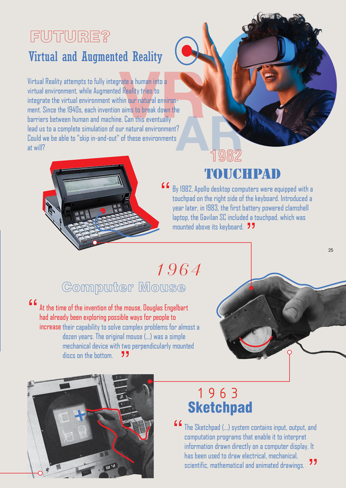
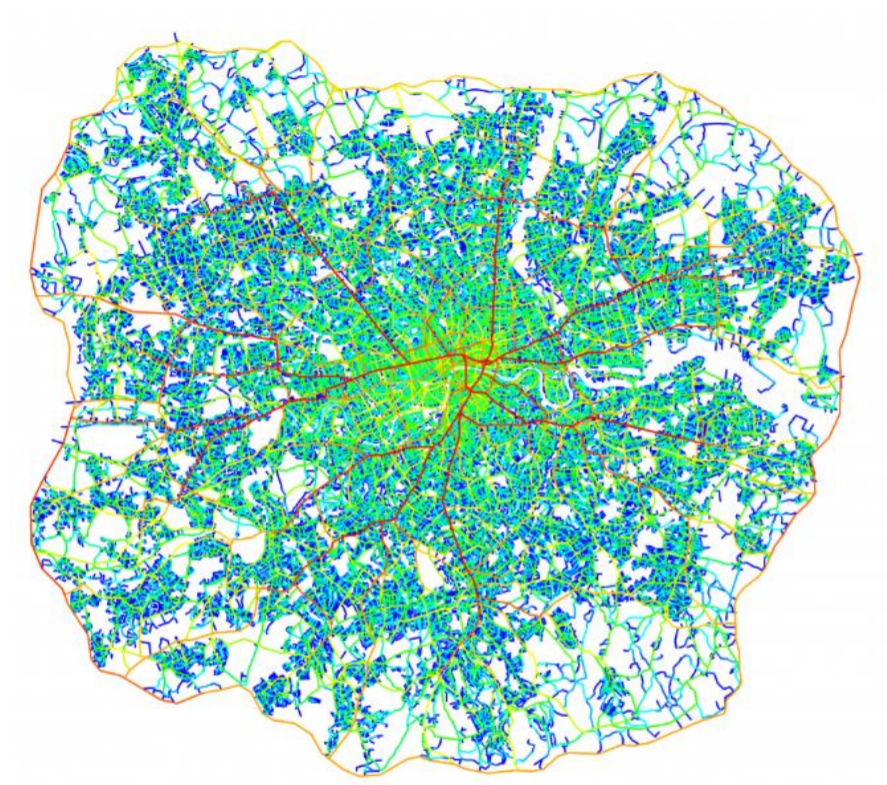
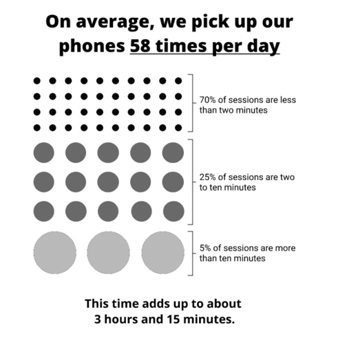

← Oliwia Jackowska
The Competition is out now!Become a Pen Pal!!
From the editors
Oliwia Jackowska


Return to top ↑
I would rather…
Read →
6
Space syntax as urban design tool

Read →
4
The daily digital life

Read →
11
More recovered articles · Oliwia Jackowska